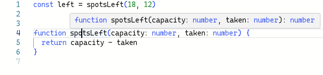
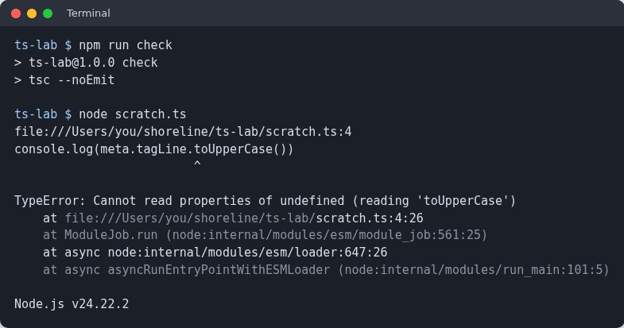

🔮 Lesson 2.1: Types and Inference
Here is a secret that makes TypeScript much less work than it looks: most of the time, you do not write types at all. TypeScript watches the values you write and works out their types on its own, then holds the rest of your code to them. Your job is to know the few places where it cannot guess and to read what it tells you when something does not fit. Today you set up a small workbench for TypeScript experiments next to Shoreline Crew HQ, learn which types to write and which to leave to the compiler, meet the one type that switches checking off (and its safe twin), and practice reading the errors you will see for the rest of your career.
🎯 Learning Objectives
By the end of this lesson, you will be able to:
- Set up a TypeScript workbench (
ts-lab) with its ownpackage.json,tsconfig.jsonand a check script - Predict the type TypeScript infers for a value, including the difference between
letandconst - Decide when to write a type annotation: parameters, values that arrive later, and empty arrays
- Use the basic types (
string,number,boolean,null,undefined) and typed arrays - Explain why
unknownis safer thananyfor data from outside your program, and check anunknownvalue withtypeof - Read the errors TS2322, TS2345, TS7006, TS18046 and TS18047 and know what each one is asking you to fix
📦 Code for this lesson
Starting code: lesson-03-start.zip · Finished code: lesson-03-end.zip. Each folder has a README with the commands to run it. The finished code adds the ts-lab folder; run npm ci in it before npm run check.
In This Lesson
🧪 Your TypeScript Workbench
For the four lessons of Module 2 you learn TypeScript on its own, before React joins in. Trying ideas inside Shoreline Crew HQ would mix two new things at once, so you get a second folder next to the app: ts-lab, a tiny Node project whose only job is to hold TypeScript files you run with node and check with tsc. Every lesson in this module adds a file to it.
💡 Mental model: the workbench in the supply shed
Before a new volunteer ties a knot on the boat, an organizer shows it on the workbench in the supply shed, where a wrong knot costs nothing. ts-lab is that bench: small, safe and made for trying things. What you learn on it goes into Shoreline Crew HQ (the boat) from Lesson 2.4 on.
Create it
Open your shoreline folder in VS Code and open a terminal (Ctrl+`). It starts in shoreline; if the prompt shows shoreline-api or shoreline-hq, type cd .. first. Then run these commands one at a time (they are the same in PowerShell, Command Prompt and macOS or Linux terminals):
mkdir ts-lab
cd ts-lab
npm init -y
npm install --save-dev --save-exact typescript@7.0.2
npx tsc --initmkdir makes the folder and cd moves into it. npm init -y writes a package.json with default answers (-y means "yes to every question"):
Expected output (npm init -y)
Wrote to /Users/you/shoreline/ts-lab/package.json:
{
"name": "ts-lab",
"version": "1.0.0",
"description": "",
"main": "index.js",
"scripts": {
"test": "echo \"Error: no test specified\" && exit 1"
},
"keywords": [],
"author": "",
"license": "ISC",
"type": "commonjs"
}The path in the first line will be your own. npm install --save-dev --save-exact typescript@7.0.2 installs the TypeScript compiler into this folder only. --save-dev records it as a development dependency, a tool you use while working rather than code that ships, and --save-exact records exactly 7.0.2, the version the course was checked with, instead of "7.0.2 or a newer 7.x":
Expected output (npm install)
added 2 packages, and audited 3 packages in 550ms
found 0 vulnerabilitiesFinally, npx tsc --init runs the compiler you just installed and asks it to write a starter tsconfig.json. Your terminal also shows a small blue TypeScript logo next to the message:
Expected output (npx tsc --init)
Created a new tsconfig.json
You can learn more at https://aka.ms/tsconfig⚠️ Run npx tsc inside ts-lab
npx tsc uses the TypeScript installed in the current folder. Run it somewhere without TypeScript (such as shoreline itself) and npm offers to download an unrelated, long-abandoned package that happens to be called tsc. If you see Need to install the following packages: tsc@2.0.4, answer n and cd ts-lab. The troubleshooting page has the details.
Two small edits
Open ts-lab/package.json in VS Code. Replace the "test" script (npm's placeholder) with a "check" script, and change "type" from "commonjs" to "module". The file should then read:
{
"name": "ts-lab",
"version": "1.0.0",
"description": "",
"main": "index.js",
"scripts": {
"check": "tsc --noEmit"
},
"keywords": [],
"author": "",
"license": "ISC",
"type": "module",
"devDependencies": {
"typescript": "7.0.2"
}
}npm run check now runs tsc --noEmit: check every .ts file in the folder and write nothing (you met --noEmit in Lesson 1.1). "type": "module" makes Node treat your files as modern JavaScript modules, the same kind of files as in Shoreline Crew HQ.
Now open ts-lab/tsconfig.json. Its lines starting with // are comments (tsconfig files allow them). Find the section headed // Stricter Typechecking Options and delete it: the comment line and the two settings under it, noUncheckedIndexedAccess and exactOptionalPropertyTypes. Shoreline Crew HQ does not turn those two on, and the lab should check your code exactly the way the app does (Lesson 2.4 looks at both). Save. The file now reads:
{
// Visit https://aka.ms/tsconfig to read more about this file
"compilerOptions": {
// File Layout
// "rootDir": "./src",
// "outDir": "./dist",
// Environment Settings
// See also https://aka.ms/tsconfig/module
"module": "nodenext",
"target": "esnext",
"types": [],
// For nodejs:
// "lib": ["esnext"],
// "types": ["node"],
// and npm install -D @types/node
// Other Outputs
"sourceMap": true,
"declaration": true,
"declarationMap": true,
// Style Options
// "noImplicitReturns": true,
// "noImplicitOverride": true,
// "noUnusedLocals": true,
// "noUnusedParameters": true,
// "noFallthroughCasesInSwitch": true,
// "noPropertyAccessFromIndexSignature": true,
// Recommended Options
"strict": true,
"jsx": "react-jsx",
"verbatimModuleSyntax": true,
"isolatedModules": true,
"noUncheckedSideEffectImports": true,
"moduleDetection": "force",
"skipLibCheck": true,
}
}You do not need most of these lines yet. Three matter today:
"strict": true: the full set of strict checks. TypeScript 7 turns them on even without this line (the app'stsconfig.app.jsondoes not list it), buttsc --initwrites it out so you can see it."moduleDetection": "force": every file is its own module, so acrewNamein one file never clashes with acrewNamein another."target": "esnext"and"module": "nodenext": write for the newest JavaScript, the way current Node.js runs it.
First run
Create a new file in ts-lab called scratch.ts (in the Explorer, right-click ts-lab → New File…). This is your scratch file for the whole lesson: each time a section shows an example, replace everything in scratch.ts with it, save, and run the two commands. Start with this:
const crewName = 'Shoreline Crew'
console.log(`${crewName}: the lab is ready`)node scratch.ts
npm run checkExpected output (node scratch.ts)
Shoreline Crew: the lab is readyExpected output (npm run check)
> ts-lab@1.0.0 check
> tsc --noEmitnode runs the file (after removing the types, as in Lesson 1.1), and npm run check checks it. The two lines starting with > are npm saying which script it runs; after them, silence means "no errors". That is the rhythm of this module: run it, check it, read what the checker says.
🔮 Inference: TypeScript Works It Out
Put this in scratch.ts. It has no types written anywhere:
let volunteers = 21
const crewName = 'Shoreline Crew'
const capacity = 18
let spotsTaken = 12
const isFull = spotsTaken >= capacityNow hover your mouse over each name in VS Code. The pop-ups show what TypeScript worked out, a process called type inference:
| You wrote | The hover shows | Why |
|---|---|---|
let volunteers = 21 | let volunteers: number | the first value is a number, and let may change to any other number |
const crewName = 'Shoreline Crew' | const crewName: "Shoreline Crew" | a const can never change, so its type is that exact text |
const capacity = 18 | const capacity: 18 | the same for an exact number |
let spotsTaken = 12 | let spotsTaken: number | let again: any number |
const isFull = spotsTaken >= capacity | const isFull: boolean | a comparison always gives true or false |
Two things to notice. First, TypeScript reads the value, including expressions like spotsTaken >= capacity, so most variables never need a type written next to them. Second, const gets a narrower type than let. A type that is one exact value, like "Shoreline Crew" or 18, is a literal type. It looks like a curiosity now; in Lesson 2.2 it is how you describe a cleanup's status as exactly one of four words.
An inferred type is not a weaker type. Add the last line of the example and check:
volunteers = 'twenty-two'Expected output (npm run check)
> ts-lab@1.0.0 check
> tsc --noEmit
scratch.ts:7:1 - error TS2322: Type 'string' is not assignable to type 'number'.
7 volunteers = 'twenty-two'
~~~~~~~~~~
Found 1 error in scratch.ts:7TypeScript decided on line 1 that volunteers is a number and holds the rest of the file to it. TS2322 is the error you will see most often in your career: "this value does not fit where you are putting it". Read it as "Type what you gave is not assignable to type what was expected".
💡 Mental model: the first entry in the logbook
When the crew starts a new logbook column, the first entry decides what the column is for: write "21" at the top and everyone knows it is a count of people. TypeScript reads your first value the same way. After that, writing a word in the count column gets flagged, whether or not anyone printed a heading on it.
✍️ When to Write a Type
A type annotation is the : type you write after a name. If inference covers so much, when do you need one? Mostly in three places, and the reason is always the same: at that moment, there is no value for TypeScript to look at.
1. Function parameters
TypeScript does not guess a parameter's type from the places that call the function. Try this in scratch.ts:
function spotsLeft(capacity, taken) {
return capacity - taken
}Expected output (npm run check)
> ts-lab@1.0.0 check
> tsc --noEmit
scratch.ts:1:20 - error TS7006: Parameter 'capacity' implicitly has an 'any' type.
1 function spotsLeft(capacity, taken) {
~~~~~~~~
scratch.ts:1:30 - error TS7006: Parameter 'taken' implicitly has an 'any' type.
1 function spotsLeft(capacity, taken) {
~~~~~
Found 2 errors in the same file, starting at: scratch.ts:1TS7006 means "I would have to treat this as any, the type that checks nothing, and strict mode does not allow that silently". The fix is an annotation on each parameter. The return type is a different story: TypeScript can see what the function returns, so it infers that too. Hover over the function name after you add the annotations:

spotsLeft: the parameters have annotations, and TypeScript worked out the return type, : number, on its own. VS Code shows the same pop-up.2. Values that arrive later, and 3. empty arrays
A variable declared without a value, and an array that starts empty, give inference nothing to read. Write the type you mean:
// 1. Parameters: always annotate (TypeScript cannot guess what callers will pass)
function spotsLeft(capacity: number, taken: number) {
return capacity - taken
}
// 2. A variable that gets its value later
let meetingPoint: string
meetingPoint = 'Top of the Cove Lane stairs'
// 3. An empty array you fill later
const bagCounts: number[] = []
bagCounts.push(14, 9, 22)
console.log(spotsLeft(18, 12), meetingPoint, bagCounts)Expected output (node scratch.ts)
6 Top of the Cove Lane stairs [ 14, 9, 22 ]And npm run check is silent. number[] reads "an array of numbers"; the next section has more on arrays.
✅ The rule of thumb professionals use
Annotate the edges (parameters, values that arrive later, data from outside) and let inference fill in the middle. Some teams also write return types on functions that other files use, as documentation that the compiler checks; you will see that in Lesson 2.3. Writing : string next to = 'Shoreline Crew' is not wrong, just noise, and it can even throw information away: the annotation replaces the literal type "Shoreline Crew" with plain string. In Lesson 1.2 you wrote exactly that in App.tsx; the project removes it.
🧱 The Basic Types and Arrays
JavaScript has a handful of primitive values, and TypeScript has a type for each, always written in lowercase:
| Type | Values | In Shoreline Crew |
|---|---|---|
string | any text, in '…', "…" or `…` | a site's name, a start time like '09:00' |
number | whole numbers and decimals alike (JavaScript has one number type), also NaN | a capacity, a weight in kilograms, a latitude |
boolean | true or false | whether a site is wheelchair accessible |
null | only null: "deliberately nothing" | no saved session yet |
undefined | only undefined: "not there" | a search that found nothing |
JavaScript also has bigint (huge whole numbers) and symbol (unique keys); you will rarely need either in a React app. The capitalized String, Number and Boolean exist too, but they name JavaScript's wrapper objects: always use the lowercase types.
null is its own type
With strict checks on, null and undefined are not quietly allowed everywhere: a string must really be a string. Try it:
const siteName: string = 'Driftwood Cove'
const capacity: number = 18
const accessible: boolean = false
let leadName: string = 'Luis Romero'
leadName = nullExpected output (npm run check)
> ts-lab@1.0.0 check
> tsc --noEmit
scratch.ts:6:1 - error TS2322: Type 'null' is not assignable to type 'string'.
6 leadName = null
~~~~~~~~
Found 1 error in scratch.ts:6The same TS2322 as before, now with null as the value that does not fit. This one check prevents a whole family of JavaScript's most common crashes, "Cannot read properties of null". When a value really may be missing, its type says so (for example "a string or null"); the section on reading errors shows one, and Lesson 2.2 teaches you to write such types yourself.
Arrays
An array type is the type of its items followed by []. TypeScript infers it from the items, or you write it when the array starts empty:
const siteIds = ['pelican-point', 'driftwood-cove', 'north-jetty']
const capacities: number[] = [18, 12, 40]
const supplies: Array<string> = ['Gloves', 'Bags']
siteIds.push(42)Expected output (npm run check)
> ts-lab@1.0.0 check
> tsc --noEmit
scratch.ts:5:14 - error TS2345: Argument of type 'number' is not assignable to parameter of type 'string'.
5 siteIds.push(42)
~~
Found 1 error in scratch.ts:5siteIds was inferred as string[], so push takes strings. The code is new: TS2345 is TS2322's sibling for function calls, "Argument of type what you passed is not assignable to parameter of type what the function expects". Array<string> means exactly the same as string[]; the angle brackets are generics (Lesson 2.3), and this course uses the shorter string[] style. If an array mixes values, such as [18, 'full'], TypeScript infers (string | number)[]: "each item is a string or a number". That | is a union type, the star of Lesson 2.2.
🚧 any and unknown
Every value you have typed so far was written in your own code, so TypeScript could see it. Real apps also handle values from outside: text the user typed, data the API sends, something saved in the browser. TypeScript cannot see those while it checks your code. JavaScript's own JSON.parse, which turns JSON text into a value, is the classic example. Put this in scratch.ts (look closely at the last line):
const text = '{"name": "Shoreline Crew", "tagline": "Many hands, cleaner sands."}'
const meta = JSON.parse(text)
console.log(meta.tagLine.toUpperCase())npm run check
node scratch.ts
any, the check has nothing to say and the program crashes when it runs. The misspelled tagLine went straight through.Expected output (node scratch.ts)
file:///Users/you/shoreline/ts-lab/scratch.ts:4
console.log(meta.tagLine.toUpperCase())
^
TypeError: Cannot read properties of undefined (reading 'toUpperCase')
at file:///Users/you/shoreline/ts-lab/scratch.ts:4:26
at ModuleJob.run (node:internal/modules/esm/module_job:561:25)
at async node:internal/modules/esm/loader:647:26
at async asyncRunEntryPointWithESMLoader (node:internal/modules/run_main:101:5)
Node.js v24.22.2The JSON says tagline; the code says tagLine. The check passed anyway, because JSON.parse returns any, the type that means "stop checking". Anything you read from an any is any too, so meta.tagLine and meta.tagLine.toUpperCase were waved through, and the mistake surfaced as a crash. On a web page that crash is a blank screen.
Now give meta the type unknown instead, by changing one line:
const meta: unknown = JSON.parse(text)Expected output (npm run check)
> ts-lab@1.0.0 check
> tsc --noEmit
scratch.ts:4:13 - error TS18046: 'meta' is of type 'unknown'.
4 console.log(meta.tagLine.toUpperCase())
~~~~
Found 1 error in scratch.ts:4TS18046: "you cannot use this value until you have checked what it is". unknown accepts any value, exactly like any, but it lets you do nothing with it until you prove what it is. The simplest proof is JavaScript's own typeof:
const saved: unknown = JSON.parse('"Many hands, cleaner sands."')
if (typeof saved === 'string') {
console.log(saved.toUpperCase())
} else {
console.log('Expected a tagline, got something else')
}Expected output (node scratch.ts)
MANY HANDS, CLEANER SANDS.The check is silent. Inside if (typeof saved === 'string'), TypeScript knows saved is a string, so toUpperCase is allowed; outside the if, it is still unknown. Using a check to make a type more precise is called narrowing. typeof works for strings, numbers and booleans; Lesson 2.2 adds the checks for objects, and in Lesson 2.4 you write the function that checks every cleanup the API sends.
any | unknown | |
|---|---|---|
| Accepts any value? | yes | yes |
| Lets you use it without checking? | yes, and so does everything you read from it | no: TS18046 until you narrow it |
| Mistakes found | when the program crashes | when you check your code |
| In this course | avoided | for every value from outside |
🛑 Data from outside is untrusted
What the API sends, what users type and what is stored in the browser can be wrong, out of date or deliberately malicious. Typing it as any does not make it safe; it only stops TypeScript from warning you. The habit you start today, "outside data is unknown until checked", is the same habit that keeps apps from crashing on bad data and from trusting input they should not.
🔎 Reading TypeScript's Errors
You already read errors the way Lesson 1.1 taught: location (scratch.ts:4:13), code, message, the line with the problem underlined, and sometimes a follow-up line saying where TypeScript's knowledge came from. One more error belongs in your toolkit before you move on. Browsers keep small pieces of text in sessionStorage (Shoreline Crew HQ keeps your sign-in there from Lesson 5.2), and getItem returns null when nothing is saved under that name. Node has no sessionStorage, so only check this one, do not run it:
const session = sessionStorage.getItem('shoreline-hq-session')
console.log(session.length)Expected output (npm run check)
> ts-lab@1.0.0 check
> tsc --noEmit
scratch.ts:3:13 - error TS18047: 'session' is possibly 'null'.
3 console.log(session.length)
~~~~~~~
Found 1 error in scratch.ts:3TS18047: hover over session and the pop-up says const session: string | null, "a string, or null". On a first visit, nothing is saved and session.length would crash. The fix is the same kind of check as with unknown:
const session = sessionStorage.getItem('shoreline-hq-session')
if (session !== null) {
console.log(session.length)
}Inside the if, session is a string, and the check is silent. You met this "maybe nothing" idea in Lesson 1.2, where getElementById returned HTMLElement | null and the template used ! to promise it was there; an if like this one is the honest way to handle it, and Lesson 2.2 shows the others.
| Code | The message starts | It is asking you to |
|---|---|---|
TS2322 | Type 'X' is not assignable to type 'Y' | give a value of the expected type Y (or fix the type, if Y was wrong) |
TS2345 | Argument of type 'X' is not assignable to parameter of type 'Y' | pass the function what its parameter expects |
TS7006 | Parameter 'p' implicitly has an 'any' type | annotate the parameter |
TS18046 | 'v' is of type 'unknown' | check what the value is before using it |
TS18047 / TS18048 | 'v' is possibly 'null' / 'undefined' | handle the "nothing there" case first |
✅ An error is a question, not a verdict
Every message above is TypeScript describing a situation it cannot rule out: "what if this is null?", "what if this is not a number?". You are not being graded; you are being asked. Answer the question in code, and the error goes away because the bug it described is gone. The first weeks with TypeScript feel like a lot of red. It gets quieter, not because TypeScript gives up, but because you start writing the answers before it asks.
When you are done with this section, keep scratch.ts: the exercises use it again.
⚠️ Common Mistakes
⚠️ Naming a file after tsc in a project
Old tutorials say npx tsc scratch.ts. In a folder with a tsconfig.json, TypeScript 7 refuses, because naming a file would silently ignore your settings:
Expected output (npx tsc scratch.ts)
error TS5112: tsconfig.json is present but will not be loaded if files are specified on commandline. Use '--ignoreConfig' to skip this error.Run npm run check (or npx tsc --noEmit) with no file name: it checks every file with the project's settings. More on the troubleshooting page.
⚠️ Silencing an error with any
Changing a type to any makes a red underline disappear the way taking the batteries out silences a smoke alarm. The question the error asked is still there; you just stopped hearing it, and everything that touches the value stops being checked too. Use unknown and a check, or fix the type.
⚠️ Annotating everything
const capacity: number = 18 works, but it is noise, and it trades the precise inferred type 18 for plain number. Annotate parameters, late values, empty arrays and outside data. When you wonder what TypeScript inferred, hover instead of writing it out.
⚠️ Running instead of checking
node scratch.ts ran the any example and the tagLine typo without a word until it crashed, and it would run every type error in this lesson the same way. Running is not checking: npm run check (and your editor's red underlines) is what checks.
🛠️ Project: Type the Crew's Numbers
You will write ts-lab/types.ts, a small script that reports Shoreline Crew's numbers using inference wherever it can and annotations exactly where it must, break it four ways and read each error, and then let inference do its work in Shoreline Crew HQ itself.
Step 1: The crew's numbers (10 min)
- In
ts-lab, createtypes.ts(leavescratch.tsas it is) and type these lines:
// Shoreline Crew numbers (Lesson 2.1): inference where it can, annotations where it must
const crewName = 'Shoreline Crew'
const siteIds = [
'pelican-point', 'driftwood-cove', 'sandpiper-flats',
'north-jetty', 'otter-creek', 'long-strand',
]
const organizers = 3
let volunteers = 21
// Bags collected at the last three cleanups: empty at first, so it needs an annotation
const bagCounts: number[] = []
bagCounts.push(14, 9, 22)- Before you hover, predict the type of each name, then hover to check:
crewName,siteIds,organizers,volunteers,bagCounts. Which one has an annotation, and why does it need one?
Step 2: Two functions (5 min)
Add the functions and the line that counts a new volunteer:
// ...
function spotsLeft(capacity: number, taken: number) {
return capacity - taken
}
function totalBags(counts: number[]) {
return counts.reduce((sum, count) => sum + count, 0)
}
volunteers += 1 // a new volunteer joined todayBoth functions annotate their parameters and let TypeScript infer what they return (hover to confirm: number for both). Look at the arrow function inside reduce: its parameters sum and count have no annotations and get no TS7006. TypeScript already knows what reduce passes to its callback on a number[], so it infers them from that context. Hover over count to see number.
Step 3: A value from outside, and the report (5 min)
Finish the file. JSON.parse('12') stands in for a capacity read from somewhere TypeScript cannot see, such as a saved form; the whole file now reads:
// Shoreline Crew numbers (Lesson 2.1): inference where it can, annotations where it must
const crewName = 'Shoreline Crew'
const siteIds = [
'pelican-point', 'driftwood-cove', 'sandpiper-flats',
'north-jetty', 'otter-creek', 'long-strand',
]
const organizers = 3
let volunteers = 21
// Bags collected at the last three cleanups: empty at first, so it needs an annotation
const bagCounts: number[] = []
bagCounts.push(14, 9, 22)
function spotsLeft(capacity: number, taken: number) {
return capacity - taken
}
function totalBags(counts: number[]) {
return counts.reduce((sum, count) => sum + count, 0)
}
volunteers += 1 // a new volunteer joined today
// A value from outside the program: unknown until it has been checked
const savedCapacity: unknown = JSON.parse('12')
console.log(`${crewName}: ${organizers + volunteers} people, ${siteIds.length} sites`)
console.log(`Bags at the last three cleanups: ${totalBags(bagCounts)}`)
if (typeof savedCapacity === 'number') {
console.log(`Tide Pool Morning Cleanup: ${spotsLeft(savedCapacity, 9)} spots left`)
} else {
console.log('The saved capacity is not a number')
}node types.ts
npm run checkExpected output (node types.ts)
Shoreline Crew: 25 people, 6 sites
Bags at the last three cleanups: 45
Tide Pool Morning Cleanup: 3 spots leftnpm run check prints only its two > lines. It checks every file in ts-lab, so if it reports an error in scratch.ts, that is your last experiment talking: fix it or empty the file.
Step 4: Break it four ways (12 min)
Make one change at a time in types.ts, run npm run check, read the whole message, and undo the change (Ctrl+Z, or ⌘ Cmd+Z on a Mac) before the next. For each, write down in your notes the code and, in your own words, the question TypeScript is asking.
- The wrong kind of value: change
volunteers += 1tovolunteers = '22'. - The wrong argument: in the
if, changespotsLeft(savedCapacity, 9)tospotsLeft('12', 9). - A parameter without a type: delete
: numberaftertakeninspotsLeft. - Skipping the check: replace the whole
if/elsewith just the line inside theif, sospotsLeft(savedCapacity, 9)runs without thetypeoftest.
Expected output (1: the wrong kind of value)
> ts-lab@1.0.0 check
> tsc --noEmit
types.ts:23:1 - error TS2322: Type 'string' is not assignable to type 'number'.
23 volunteers = '22' // a new volunteer joined today
~~~~~~~~~~
Found 1 error in types.ts:23Expected output (2: the wrong argument)
> ts-lab@1.0.0 check
> tsc --noEmit
types.ts:32:55 - error TS2345: Argument of type 'string' is not assignable to parameter of type 'number'.
32 console.log(`Tide Pool Morning Cleanup: ${spotsLeft('12', 9)} spots left`)
~~~~
Found 1 error in types.ts:32Expected output (3: a parameter without a type)
> ts-lab@1.0.0 check
> tsc --noEmit
types.ts:15:38 - error TS7006: Parameter 'taken' implicitly has an 'any' type.
15 function spotsLeft(capacity: number, taken) {
~~~~~
Found 1 error in types.ts:15Expected output (4: skipping the check)
> ts-lab@1.0.0 check
> tsc --noEmit
types.ts:31:53 - error TS2345: Argument of type 'unknown' is not assignable to parameter of type 'number'.
31 console.log(`Tide Pool Morning Cleanup: ${spotsLeft(savedCapacity, 9)} spots left`)
~~~~~~~~~~~~~
Found 1 error in types.ts:31Mistake 4 is TS2345 with unknown as the argument: spotsLeft needs a number, and an unchecked value is not one. Now, with mistake 4 still in place, also delete : unknown from savedCapacity, so it is any again. npm run check goes silent. Change JSON.parse('12') to JSON.parse('"twelve"') and run node types.ts:
Expected output (node types.ts, with any and "twelve")
Shoreline Crew: 25 people, 6 sites
Bags at the last three cleanups: 45
Tide Pool Morning Cleanup: NaN spots leftThe NaN from Lesson 1.1 is back, and nothing warned you. That is the whole case for unknown in one screen. Undo every change until types.ts matches Step 3 and npm run check is silent again.
Step 5: Inference in Shoreline Crew HQ (8 min)
In Lesson 1.2 you wrote : string on the two constants in App.tsx to have something to break. Now you know TypeScript does not need them. Open shoreline-hq/src/App.tsx and change these lines:
-const crewName: string = 'Shoreline Crew'
-const tagline: string = 'Many hands, cleaner sands.'
+const crewName = 'Shoreline Crew'
+const tagline = 'Many hands, cleaner sands.'- Hover over
crewName:const crewName: "Shoreline Crew", more precise than thestringyou had written. - Hover over
App: TypeScript inferred that the component returns a JSX element, with no annotation from you. Components are functions, and the rules of this lesson apply to them unchanged (Module 3 builds on that). - In the terminal, go to the app and check it the way the build does:
cd ../shoreline-hq
npx tsc -b
npm run buildnpx tsc -b prints nothing, and npm run build ends with a built in line as in Lesson 1.2. If you want to see the page, start the API and npm run dev as usual: it looks exactly the same, because types never reach the browser.
Your own project: on paper, list five values your own app (the one you are planning for Lesson 11.1) would handle. Mark each one "inferred" (written in your code), "annotate" (a parameter or a value that arrives later) or "unknown" (from outside: a user, an API, storage).
✅ Project Completion Checklist
- ☐
ts-labhaspackage.jsonwith acheckscript and"type": "module", and atsconfig.jsonwithout the two "stricter" options - ☐
node types.tsprints the three lines of the crew's numbers, andnpm run checkreports no errors - ☐ I can say why
bagCountsand the parameters ofspotsLeftneed annotations and the other names do not - ☐ I produced TS2322, TS2345, TS7006 and the
unknownversion of TS2345, and wrote down the question each one asks - ☐ I watched
anyturn an error into a silentNaN - ☐
App.tsxuses inference, andnpx tsc -bandnpm run buildinshoreline-hqpass
🏋️ Hands-on Exercises
Exercises 1 and 2 are part of the lesson (about 15 minutes together, included in the lesson time). Use scratch.ts for both, then delete scratch.ts: from now on ts-lab keeps one file per lesson, and Lesson 2.2 adds the next.
🏋️ Exercise 1: Predict the hover
Without hovering, write down the type TypeScript infers for each of these five names. Then paste them into scratch.ts and hover to check yourself:
const meetTime = '09:00'
let startTime = '09:00'
const bags = [14, 9, 22]
const mixed = [18, 'full']
const enoughBags = bags.length > 2💡 Hint
Ask two questions for each: can it change later (let or const)? And for arrays: what is the type of each item?
✅ Solution
| Name | Inferred type |
|---|---|
meetTime | "09:00" (a const: the exact text) |
startTime | string (a let: any text) |
bags | number[] |
mixed | (string | number)[]: each item is one or the other |
enoughBags | boolean |
Notice that the array of a const is number[], not "exactly 14, 9 and 22": const stops you from replacing the array, but you can still push to it, so its items can be any number.
🏋️ Exercise 2: Find the jetty
Put this in scratch.ts and run npm run check. Read the error, then fix it so the program prints the jetty's id in capitals, or a friendly message if there is none. Run it with node scratch.ts.
const siteIds = ['pelican-point', 'driftwood-cove', 'north-jetty', 'otter-creek']
const jetty = siteIds.find((id) => id.startsWith('north'))
console.log(jetty.toUpperCase())💡 Hint
Hover over jetty. What does find return when no item matches? Handle that case the way you handled null from getItem.
✅ Solution
Expected output (npm run check, before the fix)
> ts-lab@1.0.0 check
> tsc --noEmit
scratch.ts:4:13 - error TS18048: 'jetty' is possibly 'undefined'.
4 console.log(jetty.toUpperCase())
~~~~~
Found 1 error in scratch.ts:4const siteIds = ['pelican-point', 'driftwood-cove', 'north-jetty', 'otter-creek']
const jetty = siteIds.find((id) => id.startsWith('north'))
if (jetty !== undefined) {
console.log(jetty.toUpperCase())
} else {
console.log('No jetty in the list')
}Expected output (node scratch.ts)
NORTH-JETTYfind returns the first matching item or undefined, so jetty is string | undefined and TS18048 asks you to handle "not found". This list does contain a jetty, but TypeScript checks every possibility, not just today's data: tomorrow the list comes from the API.
🏋️ Exercise 3: Describe anything (Stretch)
Optional stretch, not counted in the lesson time (about 15 minutes).
Write a function describe(value: unknown) that returns text (N characters) for a string, a number (N) with one decimal place for a number, yes or no for a boolean, and something else for anything else. Test it with JSON.parse('"North Jetty"'), JSON.parse('18'), JSON.parse('true') and JSON.parse('null').
💡 Hint
Use one if (typeof value === '…') per type, each with its own return. After each if, hover over value to see it narrowed. toFixed(1) gives one decimal place.
✅ Solution
function describe(value: unknown) {
if (typeof value === 'string') {
return `text (${value.length} characters)`
}
if (typeof value === 'number') {
return `a number (${value.toFixed(1)})`
}
if (typeof value === 'boolean') {
return value ? 'yes' : 'no'
}
return 'something else'
}
console.log(describe(JSON.parse('"North Jetty"')))
console.log(describe(JSON.parse('18')))
console.log(describe(JSON.parse('true')))
console.log(describe(JSON.parse('null')))Expected output (node scratch.ts)
text (11 characters)
a number (18.0)
yes
something elseInside each if, value has the narrowed type, so value.length and value.toFixed(1) are allowed. typeof null is 'object' in JavaScript (a famous old quirk), so null falls through to "something else". Lesson 2.2 shows how to check objects safely, quirk included.
🎯 Quick Quiz
🎯 Check Your Understanding
Question 1: You write const meetTime = '09:00'. What does VS Code show when you hover over meetTime?
Question 2: Which of these needs a type annotation to pass npm run check in ts-lab?
Question 3: const meta = JSON.parse(text) is followed by meta.tagLine.toUpperCase(), but the JSON's property is tagline. What happens?
Question 4: siteIds is a string[] and you write siteIds.push(42). Which error does TypeScript report?
Question 5: const session = sessionStorage.getItem('shoreline-hq-session'), then session.length gives TS18047, 'session' is possibly 'null'. What is the best fix?
❓ Common Questions at This Stage
Should I annotate return types or not?
Both styles are common. Inferred return types are less to type and always match the code. Written return types document the function for its callers and catch a body that returns the wrong thing (TypeScript then checks the body against your promise). A popular middle ground, and the one this course uses: let small, local functions infer, and annotate functions other files rely on. Lesson 2.3 comes back to it.
Is there ever a good reason to use any?
Rarely, and almost never in new code. You meet it when a library has no types or when moving a large JavaScript project to TypeScript step by step. In both cases, teams treat each any as a debt to pay back. For data from outside your program, unknown does everything any does, safely.
Why does ts-lab have its own TypeScript? Isn't it already installed in shoreline-hq?
Each Node project gets its own node_modules, and npx tsc uses the one installed in the project you are in. Installing TypeScript in ts-lab keeps the workbench independent of the app, which is also how real projects work: every project pins its own tool versions.
What is the difference between null and undefined? Do I need both?
In everyday code both mean "no value". JavaScript's own features tend to produce undefined (a missing property, find with no match, a parameter nobody passed), while many APIs use null on purpose to say "deliberately empty" (getItem, getElementById). You do not choose which ones you receive, so you learn to handle both; Lesson 2.2 shows tools that handle both at once.
My editor and npm run check disagree. Which one is right?
Usually they agree within a second or two of saving. If they still differ, first save the file (the checker reads what is on disk), and check that you opened the shoreline folder rather than a single file. In VS Code, the Command Palette command TypeScript: Restart TS Server clears a confused editor. When in doubt, the terminal's npm run check is the referee.
🌟 Going Further: Bonus Challenge
Use an error as a question. Declare const probe: null = siteIds at the end of types.ts and run npm run check: the TS2322 message prints the inferred type of siteIds in full. Try the same trick on totalBags and on spotsLeft. Why do the messages show function types like (counts: number[]) => number? Write down what you think that notation means (Lesson 2.3 confirms it), then delete the probe line.
📓 Learning Journal
Take five to ten minutes and jot down:
- Key concepts you learned today
- Techniques that clicked (and the ones that have not, yet)
- Questions or confusion to look up or bring to the next session
- Ideas to try on your own
- Progress and feelings: how did this lesson go for you?
✍️ This lesson's prompt: Explain to a friend who knows JavaScript, in three or four sentences, the difference between any and unknown, using the "twelve" experiment from the project as your example. Then pick the error code from today that felt most confusing at first and rewrite its message as a plain question in your own words.
📝 Lesson Summary
🎓 Key Takeaways
- TypeScript infers types from values:
letgets a general type (number),consta literal type (18,"Shoreline Crew"); inferred types are checked just as strictly as written ones - Annotate function parameters, values that arrive later and empty arrays; let inference handle the rest, including most return types and callback parameters
- The basic types are lowercase:
string,number,boolean,null,undefined; arrays arestring[](same asArray<string>) - With strict checks,
nullandundefinedare their own types: a value that may be missing says so, and you check before using it anyswitches checking off and spreads;unknownaccepts anything but must be checked (for example withtypeof) before use. Data from outside isunknown- Read errors as questions: TS2322 (value does not fit), TS2345 (argument does not fit), TS7006 (parameter needs a type), TS18046 (check the unknown), TS18047/18048 (handle "nothing")
| If you want to… | Go to |
|---|---|
| Look up a type or pattern quickly | TypeScript Cheat Sheet |
| Fix TS5112 or the npx tsc surprise | Troubleshooting |
| Read the official chapter on everyday types | TypeScript Handbook: Everyday Types |
| Look up a new word | Glossary |
🏆 What You've Accomplished
- You set up
ts-lab, a TypeScript workbench with its own compiler, settings and check script - You can predict what TypeScript infers and know where it needs your help
- You watched
anylet a crash and aNaNthrough, andunknownstop both - You read five kinds of TypeScript errors and fixed each one by answering its question
- You simplified Shoreline Crew HQ's first component with inference and kept its build green
🔭 Looking Ahead
In Lesson 2.2: Shaping Data you describe whole objects: a site, a cleanup, its status. You will compare interfaces and type aliases, mark properties optional or read-only, combine types with unions (the | you saw today), use literal types for the four statuses, and narrow values safely, including the many ways to handle "maybe null". It all happens in a new file in ts-lab.
📋 Before the Next Lesson
- Make sure
npm run checkints-labreports no errors and you deletedscratch.ts - Make sure
npm run buildinshoreline-hqends with "built in" - Keep your notes from Step 4 of the project: the four error codes and the questions they ask
🌱 Encouragement for the Journey
Today you saw more red than in any lesson so far, and you read every message to the end. That is the skill. Most people who give up on TypeScript do it in the first week, when the errors still feel like criticism; you are learning to hear them as a colleague asking good questions. Each one you answer now is one fewer blank screen a volunteer will ever see.